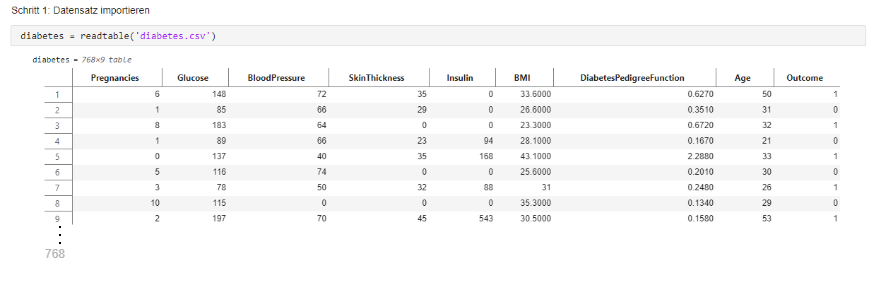
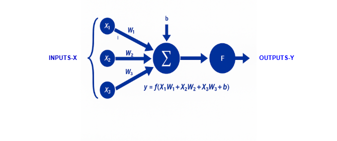
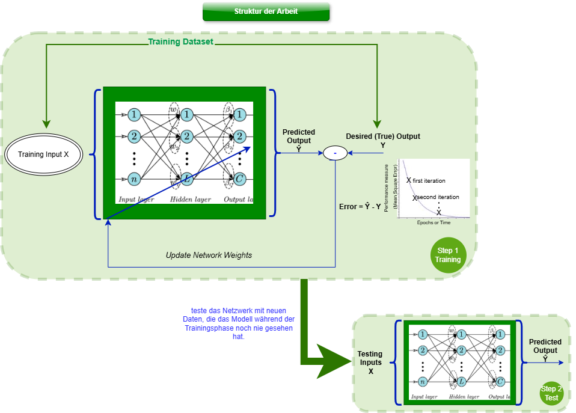
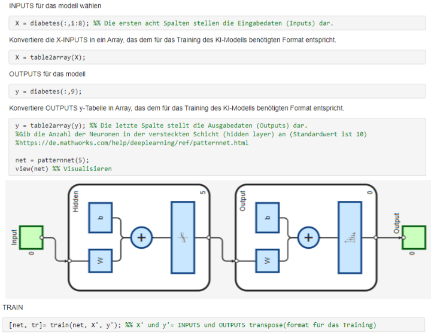
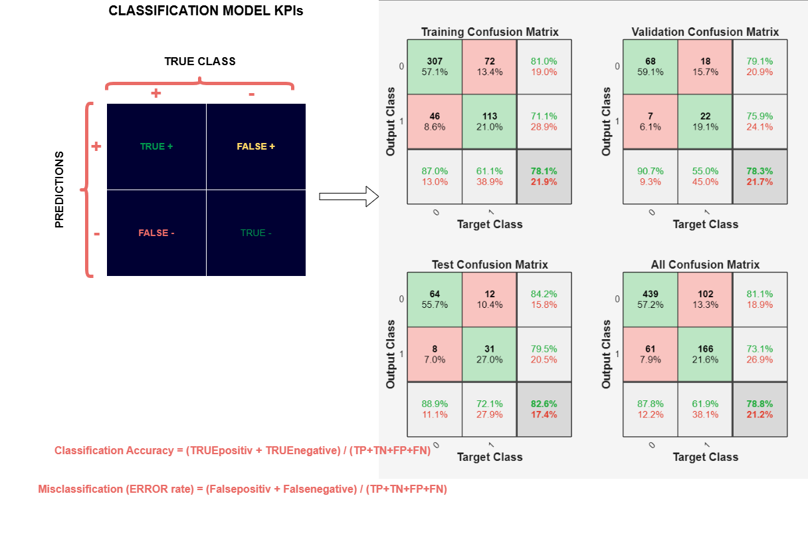
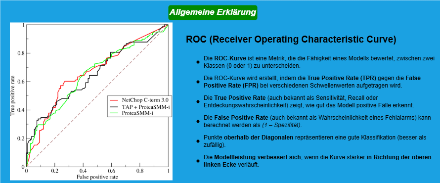
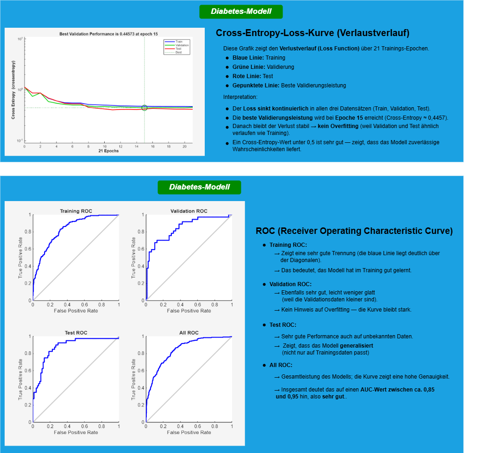

1 - Datenbeschreibung
Der verwendete Datensatz basiert auf diagnostischen Messwerten von Patientinnen der Pima-Indianer-Bevölkerung (mindestens 21 Jahre alt).
| Feature | Einheit | Beschreibung |
|---|---|---|
| Pregnancies | Anzahl | Anzahl der Schwangerschaften |
| Glucose | mg/dl | Plasmaglukose nach oralem Glukosetoleranztest |
| BloodPressure | mm Hg | Diastolischer Blutdruck |
| SkinThickness | mm | Dicke der Trizeps-Hautfalte |
| Insulin | μU/ml | Serum-Insulin 2h nach Nahrungsaufnahme |
| BMI | kg/m² | Body-Mass-Index |
| DiabetesPedigree | — | Maß für familiäre Diabetesbelastung |
| Age | Jahre | Alter der Patientin |
| Outcome | 0 / 1 | 0 = kein Diabetes, 1 = Diabetes |

2 - Modellentwicklung
Das Modell basiert auf einem künstlichen Neuron mit Sigmoid-Aktivierungsfunktion — dem Grundbaustein neuronaler Netze für binäre Klassifikation.

\[ y = f\left(\sum_{i=1}^{n} x_i \cdot w_i + b\right) \]wobei \( f \) die Sigmoid-Funktion ist:
\[ f(z) = \frac{1}{1 + e^{-z}} \]| Symbol | Bedeutung | Beschreibung |
|---|---|---|
| \( x_i \) | Eingangsvariablen | Klinische Patientendaten |
| \( w_i \) | Gewichte | Lernbare Parameter |
| \( b \) | Bias | Verschiebt die Entscheidungsgrenze |
| \( f \) | Aktivierungsfunktion | Sigmoid → Ausgabe zwischen 0 und 1 |
| \( y \) | Ausgabe | Wahrscheinlichkeit für Diabetes |
Netzwerkarchitektur
- Typ : patternnet (MATLAB Neural Network für Klassifikation)
- Hidden Layer : 1 Schicht mit 10 Neuronen
- Aktivierungsfunktion : Sigmoid
- Normalisierung : Range [0, 1]
3 - Training, Validierung & Test
Der Datensatz wurde in drei Teile aufgeteilt, um Overfitting zu erkennen und die Generalisierungsfähigkeit des Modells zu bewerten.


| Split | Anteil | Zweck |
|---|---|---|
| Training | 70 % | Modell lernt Gewichte und Bias |
| Validation | 15 % | Overfitting-Kontrolle während Training |
| Test | 15 % | Finale Evaluierung auf ungesehenen Daten |
4 - Ergebnisse & Evaluierung
Accuracy pro Dataset
78.1 %
Training Accuracy
78.3 %
Validation Accuracy
82.6 %
Test Accuracy
78.8 %
Overall Accuracy
Confusion Matrix

| Dataset | Accuracy | Klasse 0 (gesund) | Klasse 1 (diabetisch) | Bewertung |
|---|---|---|---|---|
| Training | 78.1 % | 57.1 % | 21.0 % | Gutes Lernen, Klasse 1 schwach |
| Validation | 78.3 % | 59.1 % | 19.1 % | Kein Overfitting |
| Test | 82.6 % | 55.7 % | 27.0 % | Gute Generalisierung |
| Overall | 78.8 % | 57.2 % | 21.6 % | Robustes Modell |
ROC-Kurve


Das Modell zeigt kein Overfitting — Training, Validation und Test Accuracy sind ähnlich.
Klasse 1 (diabetisch) wird schlechter erkannt als Klasse 0, was auf ein Klassenungleichgewicht
im Datensatz hinweist. Dies ist ein bekanntes Problem beim Pima-Dataset.
5 - Zusammenfassung
Grenzen des Modells
- Klassenungleichgewicht — Klasse 1 (diabetisch) ist unterrepräsentiert
- Kein Hyperparameter-Tuning durchgeführt
- Kein Vergleich mit anderen Algorithmen (Random Forest, SVM)
- Kleine Datensatzgröße (768 Patienten)
Techs
MATLAB
Machine Learning
Neural Network
Klassifikation
Confusion Matrix
ROC-Kurve
Train/Val/Test Split
Datennormalisierung
Medizinische Daten
Technische Dokumentation